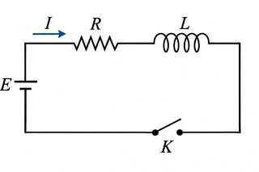
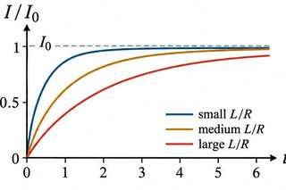
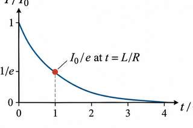
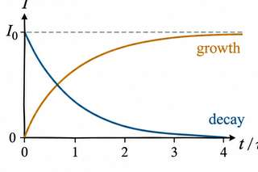

Structured notes: Section 1: growth and decay of current in an L-R circuit (Murugeshan 12.1, 12.2)
12.1 Growth of current in an L-R circuit
Prerequisites
- Ohm’s law and the emf of a source (Plus Two; pre-physics P1).
- First-order differential equations solved by separation of variables (Beyond; pre-math M4).
- Exponentials and natural logarithms (pre-math M3).
1. Setup
An inductance $L$ and a resistance $R$ are connected in series with a steady emf $E$ through a key (Fig. 12.1). On closing the key the current rises from zero to a final value $I_0$. $I$ denotes the current at time $t$.

2. Loop equation
The induced back emf is $\varepsilon=-L\,dI/dt$. The loop equation is
3. Final current
At the maximum, $dI/dt=0$, so
4. Variables separated
Substituting Eq. (2) into Eq. (1) gives $R(I_0-I)=L\,dI/dt$, that is
5. Integration and boundary condition
Integration gives
The boundary condition $I=0$ at $t=0$ fixes $C=-\log I_0$, so $\log_e\left[(I_0-I)/I_0\right]=-(R/L)t$.
6. Solution
7. Time constant
The time constant is $\tau = L/R$. At $t=\tau$, $I=(1-e^{-1})I_0 = 0.632\,I_0$. The current reaches $0.865\,I_0$ at $2\tau$ and $0.950\,I_0$ at $3\tau$ (Fig. 12.2).

8. Worked example (printed p. 314)
For $R=10\ \Omega$, $L=0.5$ H and $E=10$ V, $R/L=20\ \text{s}^{-1}$. The time to reach 63.2% of $I_0$ is $t=\frac{\ln 2.717}{20}=0.05$ s, which equals $\tau=L/R$.
12.2 Decay of current in an L-R circuit
Prerequisites
- §12.1 of these notes: the loop equation and the time constant.
- Exponentials and natural logarithms (pre-math M3).
1. Setup
The cell is disconnected and the two ends of the circuit are joined. The emf is zero, and the inductor drives the current through $R$ by its back emf.
2. Loop equation
Separating variables, $dI/I = -(R/L)\,dt$.
3. Solution
Integration gives $\log_e I = -(R/L)t + C$. The initial condition $I=I_0$ at $t=0$ gives $C=\log_e I_0$, and so
4. Interpretation
The decay time constant is $L/R$, the time in which the current falls to $1/e$ of $I_0$. The rate of decay is $dI/dt=-(R/L)I$. Growth and decay are complementary (Fig. 12.5).


5. Worked example (printed p. 315)
$I_0=E/R=2$ A and $R/L=10\ \text{s}^{-1}$, so $I=2e^{-10t}$. At $t=0.05$ s, $I=1.213$ A. At $t=0.2$ s, $I=0.271$ A.